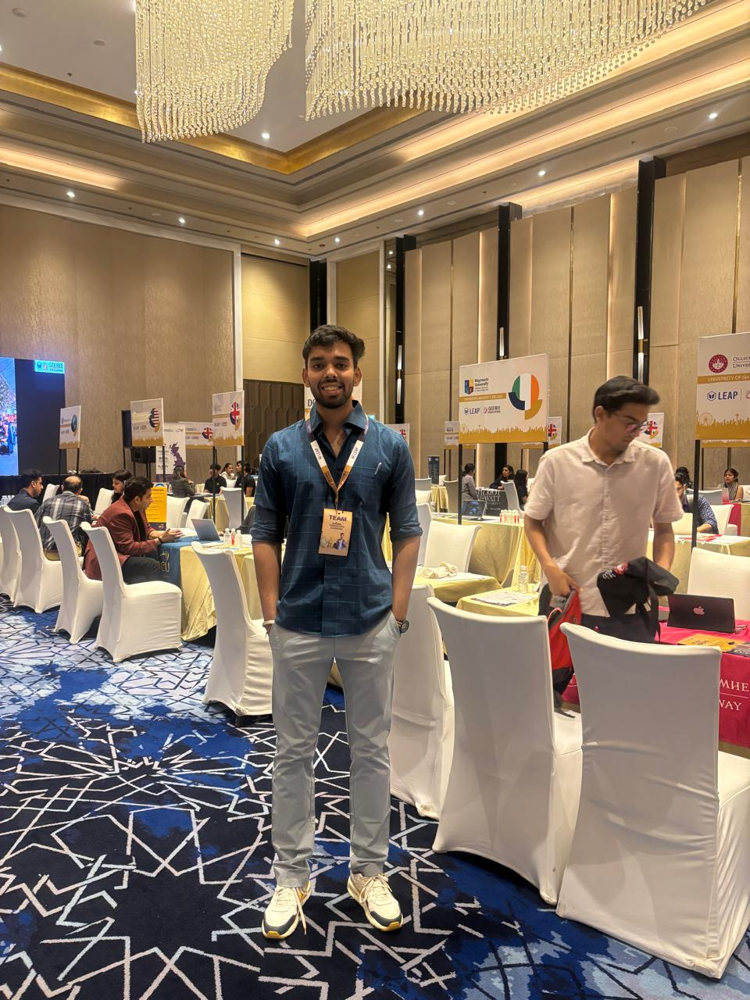

<div class="default-container">
    <div class="row align-items-center">
        <!-- Left Column: Image -->
        <div class="col-lg-5 left">
            
        </div>

        <!-- Right Column: Text -->
        <div class="col-lg-7 right">
            <h2 class="default-topic">About me.</h2>
            <p class="default-p">
                Hey! I'm Animesh Shukla, a tech enthusiast and full-stack developer who enjoys 
                <span class="default-highlight">solving real-world problems with code</span>.
            </p>
            <p class="default-p">
                I’m currently working as a <span class="default-highlight">Programmer Analyst Trainee at Cognizant</span>, 
                where I’ve been deepening my understanding of frontend technologies like 
                <span class="default-highlight">TypeScript, React, and CSS</span>, and expanding my knowledge of backend services and cloud platforms.
            </p>
            <p class="default-p">
                Before Cognizant, I interned as an <span class="default-highlight">AI/ML Research Intern at CSIR-AMPRI</span>, 
                working on applying CNNs for micrograph analysis using image preprocessing and deep learning techniques.
            </p>
            <p class="default-p">
                I also interned at <span class="default-highlight">CRISP India</span>, contributing to software development and data analysis 
                using <span class="default-highlight">Python</span> and <span class="default-highlight">PHP</span>.
            </p>
            <p class="default-p">
                My journey began with a technical internship at <span class="default-highlight">West Central Railway</span>, 
                where I worked on railway signaling and telecom systems, including electronic interlocking.
            </p>
            <p class="default-p">
                From AI research to full-stack apps, my path is driven by curiosity. Whether it's APIs, debugging, or deployment, 
                I enjoy every step of the development process.
            </p>
            <p class="default-p">
                I'm soon heading to the <span class="default-highlight">University of Birmingham</span> for my Master’s in Computer Science — 
                ready to grow and make an impact globally.
            </p>
            <p class="default-p">
                Thanks for stopping by. Let’s connect and build something awesome together!
            </p>
            <div class="mt-4">
                <h2 class="default-topic">Reach out.</h2>
                <p class="default-p">
                    You can find me on GitHub, LinkedIn, or just message me via the contact page. 
                    Always happy to collaborate, chat, or brainstorm ideas.
                </p>
                <button>
                    <a routerLink="/contact" class="a-green">
                        > Contact me
                    </a>
                </button>
            </div>
        </div>
    </div>
</div>
